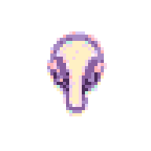
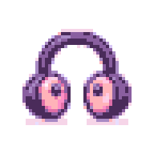

How it works
Five small steps, about ten minutes the first time.
1. Install
Run the installer. It installs for your user only, so it needs no administrator rights. The first time you start Nekoizer it downloads its voice models (about 1.5 GB) and shows a progress window. The download resumes if it is interrupted.

2. Install VB-Cable
Nekoizer sends your converted voice to a virtual audio cable, which your chat app then uses as its microphone. Install the free VB-Cable from vb-audio.com. Nekoizer cannot install it for you.

3. Load a voice
Drop a clip on a slot (wav, mp3, flac or ogg), choose a file, or paste an https link to one. For an RVC voice, drop its .pth or .zip on a slot. voice-models.com lists community RVC models, and the button in the app opens it. Download a model there, then import it from your disk.

4. Pick your devices
Choose your real microphone as input and the cable as output, then press Start. In Discord, a game or OBS, choose the cable as the microphone.

5. Tune and talk
Nudge pitch, tone and emotion while you speak, or save a preset. Ctrl+Alt+1 to 4 switch between the four voice slots.
Good to know
- You need an NVIDIA graphics card. Nekoizer was tested on a 4 GB laptop GPU. Clip voices run in real time with the default settings there. RVC voices were close to the limit on that card, so a larger block size may help.
- The converted voice is for fun and creative use. Tell people when it matters, and only use voices you have the right to use.